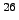
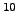

Next: About this document ...
Up: CosmoCalc manual
Previous: CosmoCalc manual
-
- 1
- Vermeesch, P., 2007, CosmoCalc: an Excel
add-in for cosmogenic nuclide calculations: Geochemistry,
Geophysics, and Geosystems (in press)
- 2
- Lal, D., Cosmic ray labeling of erosion surfaces: in
situ nuclide production rates and erosion models, Earth and
Planetary Science Letters, 104, 424-439, 1991.
- 3
- Stone, J., Air pressure and cosmogenic isotope
production, Journal of Geophysical Research, 105, 23753-23759,
2000.
- 4
- Dunai, T.J., Scaling factors for production rates
of in situ produced cosmogenic nuclides: a critical reevaluation,
Earth and Planetary Science Letters, 176, 157-169, 2000.
- 5
- Desilets, D., and M. Zreda, Spatial and
temporal distribution of secondary cosmic-ray nucleon intensities
and applications to in situ cosmogenic dating, Earth and
Planetary Science Letters, 206, 21-42, 2003.
- 6
- Desilets, D., M. Zreda, and T. Prabu, Extended
scaling factors for in situ cosmogenic nuclides: New measurements at
low latitude, Earth and Planetary Science Letters, 246,
265-276, 2006.
- 7
- Granger, D.E., and A.L. Smith, Dating buried
sediments using radioactive decay and muogenic production of
Al and Be, Nuclear Instruments and Methods in
Physics Research B, 172, 822-826, 2000.
- 8
- Schaller, M., F. von Blanckenburg, A. Veldkamp,
L.A. Tebbens, N. Hovius, and P.W. Kubik, A 30000yr record of
erosion rates from cosmogenic Be in Middle Europe river
terraces, Earth and Planetary Science Letters, 204, 307-320,
2002.
Pieter Vermeesch
2007-06-16